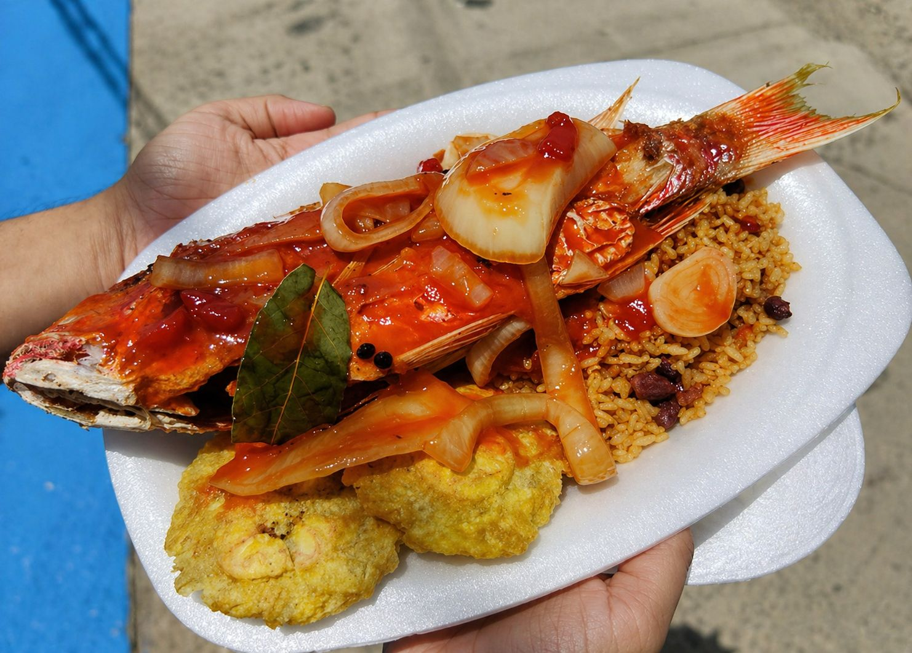
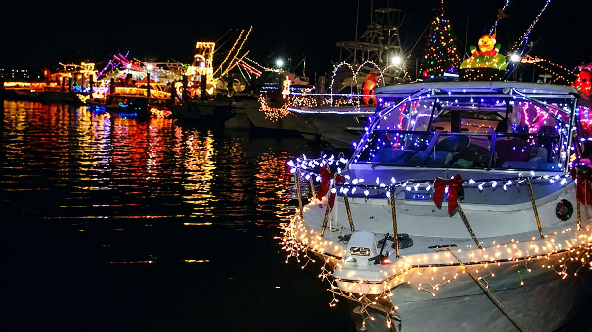
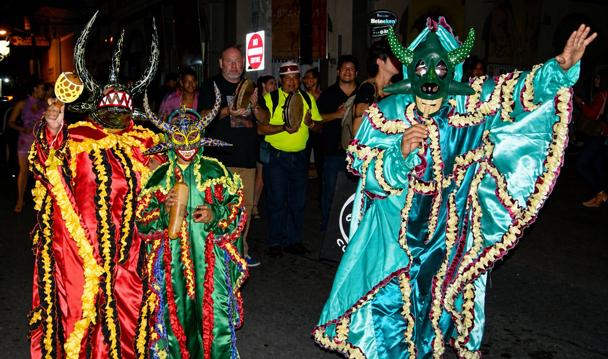
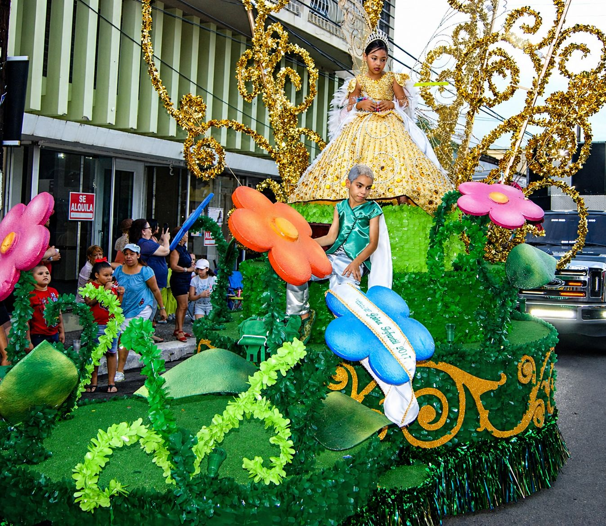
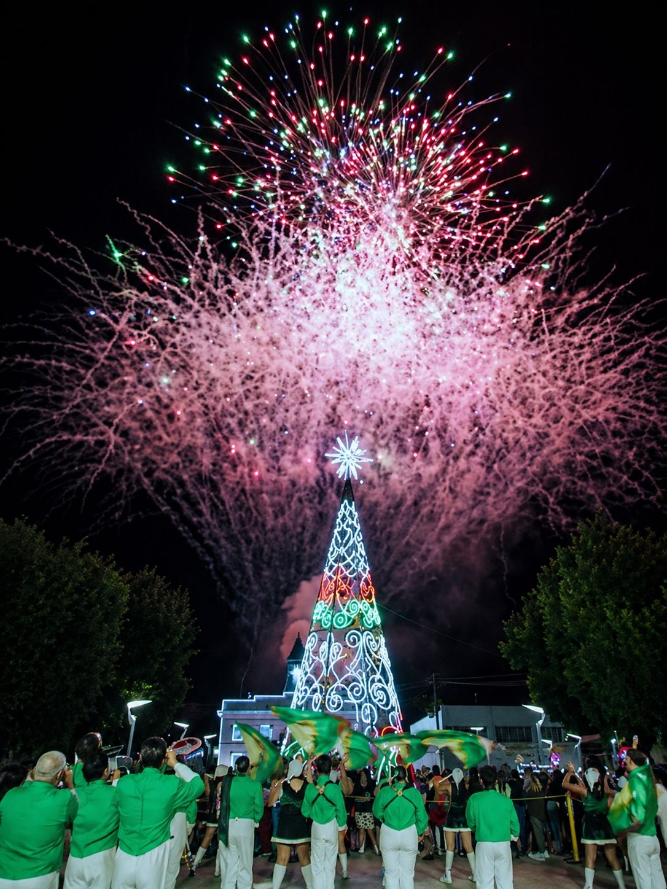

Festival gastronómico y cultural donde se celebra la comida típica de Salinas, especialmente el famoso mojo isleño. Incluye música en vivo, artesanías y ambiente familiar.

Evento tradicional en la costa donde embarcaciones decoradas con luces navideñas desfilan por el mar, creando un espectáculo visual único para residentes y visitantes.

Celebración llena de color con comparsas, música, bailes y disfraces. Es una actividad cultural que reúne a la comunidad y turistas cada año.

Evento tradicional en honor al santo patrón del pueblo. Incluye kioscos, juegos, música en vivo y actividades para toda la familia.

Actividad que marca el inicio de la temporada navideña en Salinas, con luces, decoraciones, presentaciones musicales y ambiente festivo.